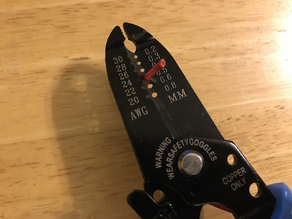

Step 3
Cut a length of electrical wire that is long enough to go from the piece of aluminum foil to the edge of the board. Using the wire strippers, trim off 1/2" of the plastic coating from both ends of the wire. The wire strippers have numbers indicating the gauge of the wire. If you have 24-gauge wire, put the wire in the spot marked "24" about 1/2" from the end of it. Squeeze the wire strippers closed and slide the plastic coating off the end. Repeat on the other end of the wire.
